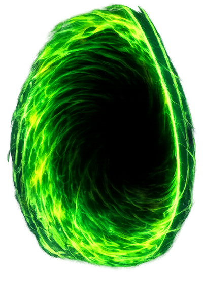

Press start
click anywhere
Sign in
Display name
Email
Password
Sign in
or
Create an account
⚔️
Singleplayer
🌐
Multiplayer
🃏
Collection
👤
Profile
← Menu
Profile
Display name
Email
0
Cards
0
Packs
0
Dust
Save name
or
Sign out
← Menu
Multiplayer
Create new game
or join existing
Game code
Join game
⚡ Solo test mode
Game created!
----
Send this code to your opponent
Waiting for opponent
.
.
.
← Menu
Collection
✨
0
🃏 Commons
👑 Legendaries
◀
Page 1
▶
My Decks
0/10
+ New deck
← All decks
0 / 40
✨ Auto-fill
⧉ Copy
🗑 Delete

📜
Play history
Inspired
Round
1
·
—
0
Grave
40
Deck
60
🌲
Opponent
150
/
150
HP
Opponent
You
🌱
You
150
/
150
HP
Select up to
2 cards
to play.
Confirm →
Choose your deck
You play with the deck you pick here.
Cancel
Deck updated
Cards you no longer own have been removed from this deck.
Got it
Round complete
You
150
HP
VS
Opponent
150
HP
Cards played this round
You played
Opponent played
Round log
👁 View table
Next round →
← Back to summary
Choose
Look at your deck
Keep this order
Shuffle my deck
Choose cards to discard
Select cards to send to your graveyard
Discard selected
Link a blessing
Cancel
Old version
Press
Ctrl + Shift + R
to update.
Close
Reload
Marber Vault
The Vault opens. Take what it offers?
Leave them
Take them
Marber Vault
Close
Graveyard
Cards played this game
Close
—
Play again